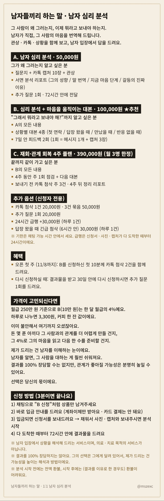
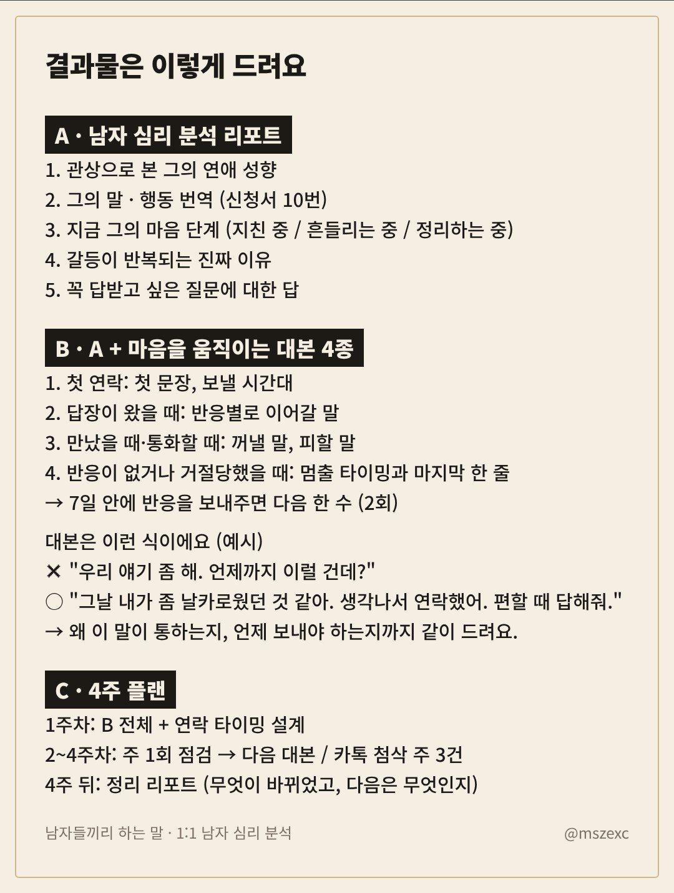
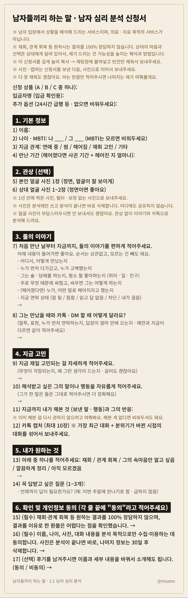

<title>남자 심리 분석 안내</title>
<meta name="claude:viewport-fit-sides" content="cover">
<link rel="stylesheet" href="https://fonts.googleapis.com/css2?family=Noto+Sans+KR:wght@400;700;900&display=swap">
<style>
  /* 한 줄 세로 스크롤: 위에 탭 3개(고정), 아래로 안내문 · 결과물 · 신청서 이미지가 원본 그대로 */
  :root {
    --bg: #ece6da; --paper: #f4eee3; --ink: #1d1a16; --muted: #6f665a; --line: #cdb68a; --accent: #9a6a1f;
    --tab-bg: #1d1a16; --tab-fg: #f4eee3;
    --sans: 'Noto Sans KR', 'Apple SD Gothic Neo', 'Malgun Gothic', sans-serif;
  }
  @media (prefers-color-scheme: dark) { :root:not([data-theme="light"]) {
    --bg: #15130f; --paper: #1f1c17; --ink: #f1ebdf; --muted: #a59a88; --line: #4a3c22; --accent: #e0b25a;
    --tab-bg: #0d0c0a; --tab-fg: #f1ebdf; color-scheme: dark } }
  :root[data-theme="dark"] {
    --bg: #15130f; --paper: #1f1c17; --ink: #f1ebdf; --muted: #a59a88; --line: #4a3c22; --accent: #e0b25a;
    --tab-bg: #0d0c0a; --tab-fg: #f1ebdf; color-scheme: dark }
  body { background: var(--bg); color: var(--ink); font-family: var(--sans); word-break: keep-all; }
  body::before { content: ""; position: fixed; inset: 0 0 auto; height: env(safe-area-inset-top, 0px); z-index: 10; background: var(--tab-bg); }
  .bar { position: sticky; top: env(safe-area-inset-top, 0px); z-index: 5; background: var(--tab-bg);
    padding-left: max(16px, env(safe-area-inset-left, 0px)); padding-right: max(16px, env(safe-area-inset-right, 0px)); padding-block: 10px; }
  .bar-in { max-width: 720px; margin: 0 auto; display: flex; flex-direction: column; gap: 8px; }
  .brand { color: var(--tab-fg); font-size: 13px; letter-spacing: .04em; opacity: .75; }
  nav { display: grid; grid-template-columns: repeat(3, 1fr); gap: 6px; }
  nav a { display: block; text-align: center; padding: 10px 4px; border-radius: 6px; font-size: 15px; font-weight: 700;
    color: var(--tab-fg); text-decoration: none; border: 1px solid rgba(255,255,255,.18); }
  nav a.on { background: var(--tab-fg); color: var(--tab-bg); border-color: var(--tab-fg); }
  nav a:focus-visible { outline: 2px solid var(--accent); outline-offset: 2px; }
  main { padding-left: max(16px, env(safe-area-inset-left, 0px)); padding-right: max(16px, env(safe-area-inset-right, 0px)); padding-block: 16px 40px; }
  .col { max-width: 720px; margin: 0 auto; display: flex; flex-direction: column; gap: 28px; }
  section { scroll-margin-top: calc(env(safe-area-inset-top, 0px) + 110px); display: flex; flex-direction: column; gap: 10px; }
  h2 { font-size: 15px; font-weight: 700; color: var(--muted); letter-spacing: .02em; margin: 0; }
  section img { display: block; width: 100%; max-width: 100%; height: auto; border-radius: 4px; box-shadow: 0 1px 0 var(--line); }
  .apply { background: var(--paper); border: 1px solid var(--line); border-radius: 6px; padding: 18px; display: flex; flex-direction: column; gap: 6px; }
  .apply b { font-size: 18px; font-weight: 900; }
  .apply p { margin: 0; font-size: 15px; line-height: 1.6; color: var(--muted); }
  .apply em { font-style: normal; color: var(--accent); font-weight: 700; }
  footer { text-align: center; font-size: 12px; color: var(--muted); }
</style>

<header class="bar"><div class="bar-in">
  <div class="brand">남자들끼리 하는 말 · 1:1 남자 심리 분석 · @mszexc</div>
  <nav>
    <a href="#guide" id="t-guide">안내문</a>
    <a href="#report" id="t-report">결과물</a>
    <a href="#form" id="t-form">신청서</a>
  </nav>
</div></header>

<main><div class="col">
  <section id="guide">
    <h2>1:1 남자 심리 분석 안내</h2>
    
  </section>
  <section id="report">
    <h2>결과물은 이렇게 드려요</h2>
    
  </section>
  <section id="form">
    <h2>신청서 미리보기</h2>
    
  </section>
  <div class="apply">
    <b>신청은 카카오채널 채팅으로</b>
    <p>채팅창에 <em>"A 신청" · "B 신청" · "C 신청"</em>이라고 남겨주세요.<br>입금 안내(계좌이체)를 드리고, 확인되면 신청서를 글로 보내드려요.</p>
  </div>
  <footer>남자가 말하는 남자심리 · 의료 · 치료 목적의 서비스가 아닙니다</footer>
</div></main>

<script>
  const ids = ['guide', 'report', 'form'];
  function mark(id) { ids.forEach(k => document.getElementById('t-' + k).classList.toggle('on', k === id)); }
  function go() {
    const id = location.hash.slice(1);
    if (ids.includes(id)) { document.getElementById(id).scrollIntoView(); mark(id); } else mark('guide');
  }
  addEventListener('hashchange', go);
  addEventListener('load', go);
  const io = new IntersectionObserver(es => es.forEach(e => { if (e.isIntersecting) mark(e.target.id); }), { rootMargin: '-40% 0px -55% 0px' });
  ids.forEach(k => io.observe(document.getElementById(k)));
</script>
